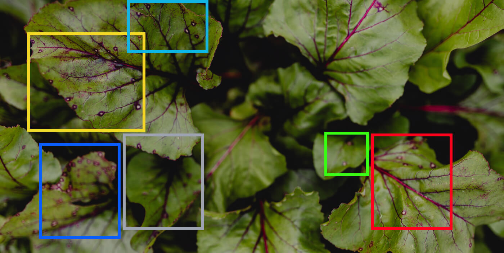

This project involved cleaning and preparing a dataset using MySQL. The goal was to identify and resolve issues such as Missing values, Duplicate records, Updating Deleting Inserting and Inconsistencies within the data.


This project focuses on exploratory data analysis using MySQL. It involves querying and manipulating large datasets to extract meaningful insights and trends

This Holds My tableu Project

The design and implementation of an IoT-based Aerial Agriculture Monitoring System aim to revolutionize agriculture by integrating IoT technologies, data analytics, and aerial monitoring. This system provides real-time data for precise decision-making, optimizing resource usage, and enhancing farm efficiency.
This Python script organizes files by sorting them into folders based on file types (.csv, .png, .txt, .jpeg, .jpg, .xlsx). It uses os and shutil to scan a directory, create necessary folders like "CSV files," "Image files," and "Text files," and move files to the appropriate folder if they aren't already there.

Currently working on improving and expanding my website, focusing on adding new features, optimizing performance, and enhancing the user experience.